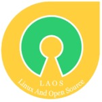

LAOS

Ukm laos merupakan wadah mahasiswa pssi yang tertarim kepada dunia sistem operasi open source terutama linux. UKM Laos adalah ukm yang menjadi tempat berkumpulnya para pecinta linux maupun orang yang ingin mengerti lebih tentang mata kuliah pemrograman yang ada di PSSI. UKM ini pertama kali didirikan oleh Pak diksi yang sekarang menjadi salah satu dosen di PSSI. Di dalam UKM LAOS terdapat pertemuan rutin setiap hari selasa malam dan jumat malam yang akan diisi oleh divisi yang ada di UKM LAOS. Divisi itu yaitu sistem operasi,jaringan,multimedia, dan pemrograman yang masing masing divisi diberi waktu 2x pertemuan an untuk menyampaikan materi mengenai divisi yang dikelola kepada anggota UKM laos lainnya. Tidak hanya pertemuan rutin, UKM LAOS juga memiliki beberapa kegiatan lainnya seperti Release Party, Launching LAOS, Pelatihan Linux, Pelatihan manajemen jaringan, dan masih banyak lainnya.